实验目的
1. 理解光的波动性，掌握夫琅禾费远场条件及单缝、圆孔衍射现象与观测要点。
2. 建立单缝缝宽、波长与衍射角、条纹间距的定量关系，能由条纹位置求缝宽或波长。
3. 认识圆孔艾里斑与暗环，掌握第一暗环 \(\sin\theta_1 \approx 1.22\lambda/D\) 及与角分辨率的关系。
4. 会搭建、调整夫琅禾费衍射光路，熟悉准直、缝取向、圆孔同轴与接收屏定位。
5. 会对条纹间距、衍射角、艾里斑等相关数据做误差与不确定度评定，规范表达结果。
6. 熟悉单缝明/暗纹与次极大、圆孔旁瓣等图样特征，理解孔径越小衍射越显著。
7. 理解瑞利判据与圆孔衍射的联系，了解在光谱、光学计量与激光等领域的应用。
光的衍射概述
光的衍射是光在传播过程中遇到障碍物或有限大小的孔径、狭缝时，波前受到限制而发生“绕射”，不再服从几何光学的直线传播，从而在空间中形成可观测的明暗条纹或光斑结构的现象，体现了光的波动性。当障碍物或开口的特征尺度与光波长可比拟时，衍射尤为明显。根据光源—孔径—观察面之间的距离关系，可分别用菲涅尔衍射、夫琅禾费衍射等模型描述；图样形态与波长及孔径几何有关，是理解光谱仪器、成像极限与多种精密光学现象的共同基础。
光的衍射的典型应用
光谱与色散
光栅、棱镜等元件中的衍射与色散波长标定与物质成分分析
成像分辨率
光经圆孔的衍射形成艾里斑瑞利判据与望远镜、显微镜的衍射极限
光学计量
由衍射条纹或艾里斑尺度反推波长或精密标定与教学演示
激光与光学系统
束宽、孔径与衍射限制下的远场发散光学设计与光束整形
历史背景与理论基础
1. 夫琅禾费衍射历史背景
19世纪初，约瑟夫·夫琅禾费（Joseph von Fraunhofer）研究平行光经狭缝或孔径后的远场图样：当光源与观察屏足够远，或用透镜把入射平面波与远场分别成像在物方、像方焦面时，可得到夫琅禾费衍射强度分布。本实验平台以单缝与圆孔两类夫琅禾费衍射为重点，展示这一经典波动光学图像。
夫琅禾费衍射把“波前在孔径处受限、能量在角向重新分配”具体化：单缝中缝越窄条纹越展宽，圆孔中孔径越小艾里斑越大；这与几何光学“锐利阴影”的直觉形成对照，是理解光谱仪、成像分辨率等现象的基础。
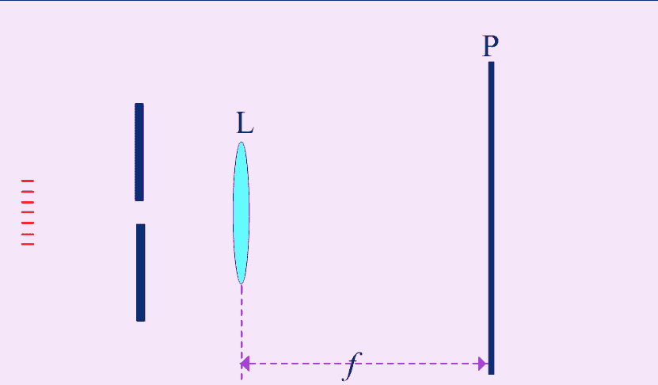
2. 惠更斯—菲涅尔原理
惠更斯原理指出：波前上每一点都是次级球面子波的新波源，下一时刻波前是这些子波的包络。菲涅尔在惠更斯基础上引入干涉思想：各子波相干叠加，定量给出衍射场强度分布，从而能解释单缝、圆孔等孔径后的夫琅禾费图样。
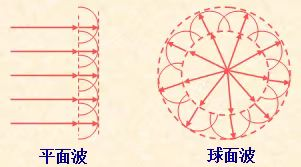
平面波与球面波：波前上子波及其包络（惠更斯作图法示意）
3. 夫琅禾费衍射的物理图像
在前述惠更斯—菲涅尔图像下，将狭缝处的波前视为大量相干子波源，每一子波向各方向传播；在远场或透镜后焦面上，各子波因光程差不同而发生相干叠加。沿缝法线方向各子波同相，形成主极大；在满足相消条件的方向上出现暗纹，其间还有较弱的次极大。下图给出若干典型孔径形状下夫琅禾费衍射的模拟图样与光强分布（示意）。
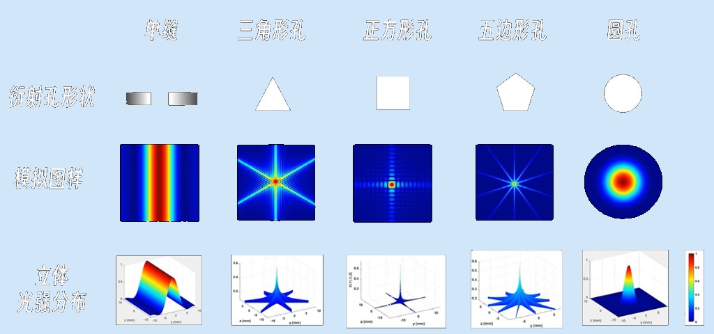
不同孔径下夫琅禾费衍射图样与光强分布（示意图）
- 夫琅禾费条件：入射与衍射波前均可近似为平面波，或用透镜等效无穷远像距，在焦面上观察角谱分布。
4. 衍射现象
夫琅禾费衍射是衍射现象中的一类重要情形，自然界与实验中还有许多其它表现,下面三幅配图是三种典型实例：
光栅衍射
致密周期性条纹将光按波长展开
星芒现象
光通过细密网格时的十字状衍射辐射
泊松亮斑
圆屏阴影中心的亮斑（菲涅尔衍射）
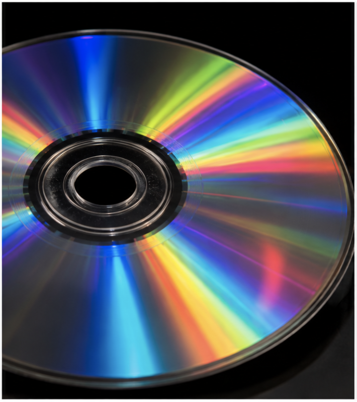
光栅衍射：光盘表面近似光栅结构对白光色散
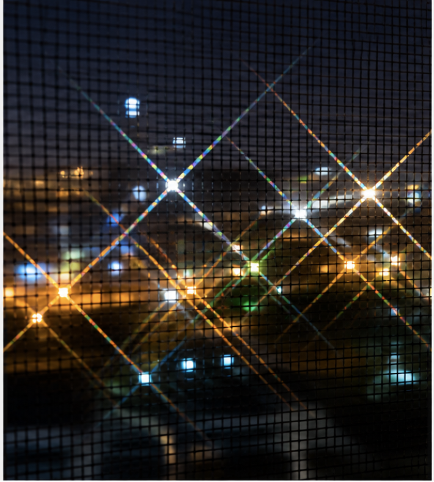
星芒现象：光经纱窗等周期性网格后的十字状衍射
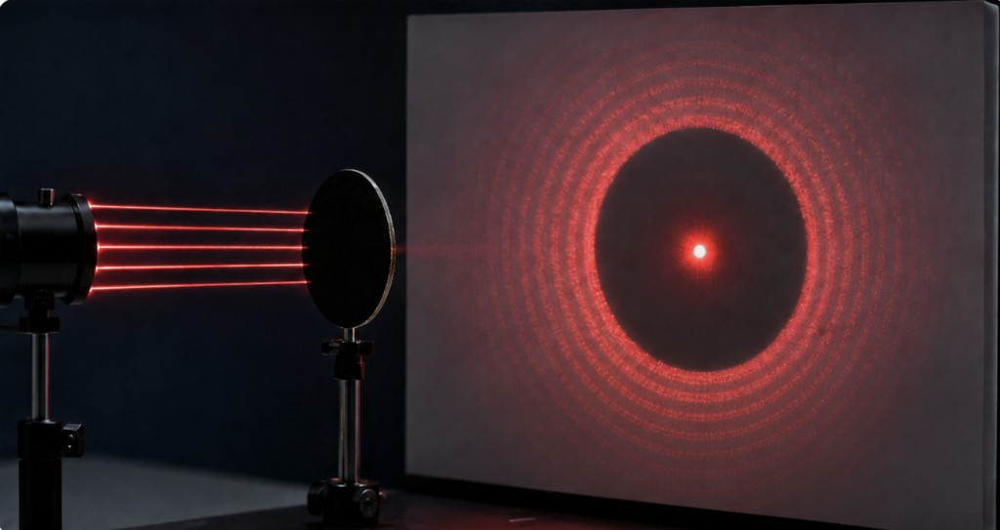
泊松亮斑：几何阴影中心的菲涅尔衍射亮斑
5. 近场衍射与远场衍射
按观察距离与孔径线度，常将衍射分为两类：
- 近场衍射（菲涅尔衍射）:光源或观察屏与孔径的距离为有限远，波前曲率不可忽略，需用菲涅尔积分描述;阴影边界附近、泊松亮斑等属此类。
- 远场衍射（夫琅禾费衍射）:入射与衍射光均可近似为平面波，强度分布常表为孔径函数的傅里叶变换;单缝、圆孔夫琅禾费图样即其典型结果。
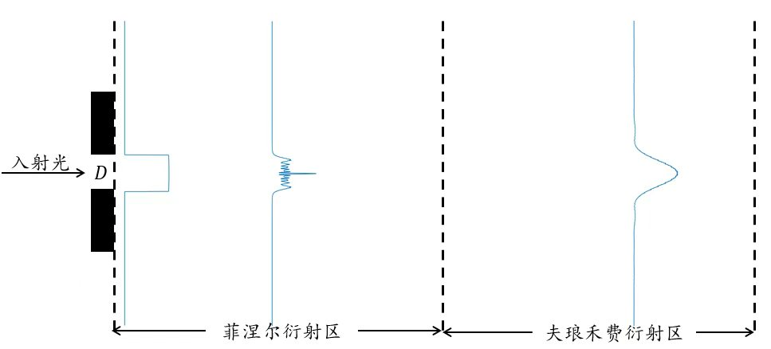
菲涅尔衍射区与夫琅禾费衍射区强度演化示意
近场与远场的划分依赖于几何距离与波长、孔径尺寸的相对关系，夫琅禾费衍射可视为菲涅尔衍射在远场极限下的近似。
实验仪器
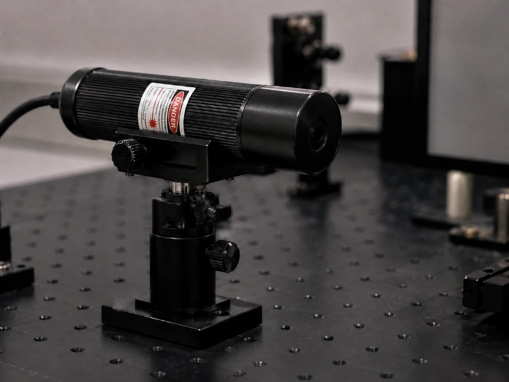
激光仪

凸透镜（R=1000~10000 mm ）
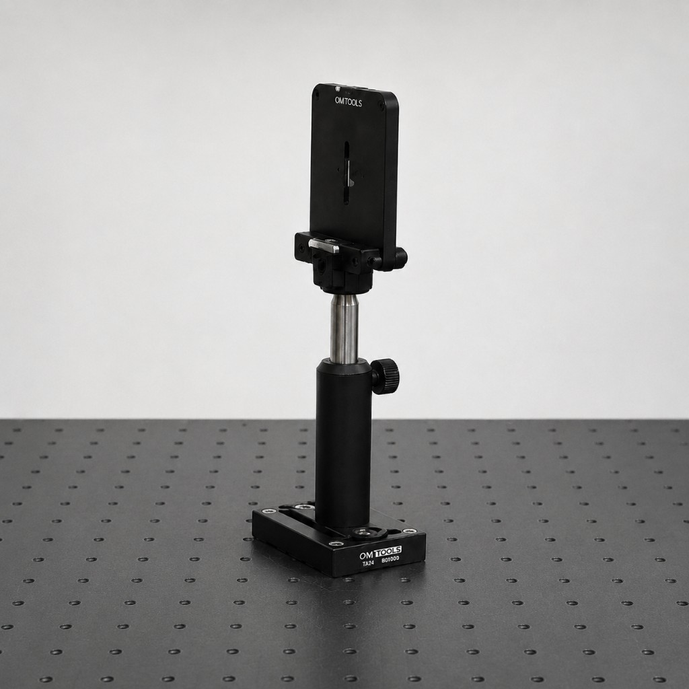
单缝光阑
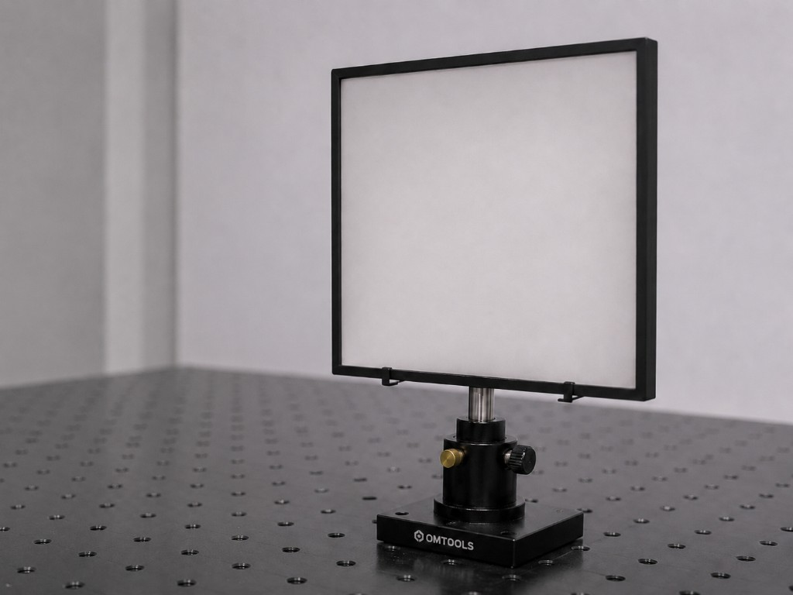
接收屏
主要仪器设备：
- 激光仪：提供方向性好、单色性较高的光束，经准直后作为夫琅禾费衍射实验的照明光源
- 平凸透镜：曲率半径通常在1000~10000 mm 量级，可用于光束准直或会聚，配合孔径与接收面搭建光路
- 单缝光阑：限制光束截面并形成单缝夫琅禾费衍射；图示为可调单缝组件，缝宽按实验要求选定并与波长、焦距等匹配
- 接收屏：在远场或透镜焦面附近接收图样，便于观察单缝衍射条纹及强度分布
夫琅禾费单缝衍射原理详解
1. 夫琅禾费单缝衍射物理原理
单色平行光照射单缝等有限孔径时，波前被限制，根据惠更斯–菲涅尔原理，孔径上各子波源相干叠加，在远场或经透镜在其焦面上形成稳定的角分布图样，即夫琅禾费衍射。图样特征由孔径形状与尺寸、波长及观察几何共同决定。
2. 单缝衍射强度分布
设单缝宽度为 \(a\)，衍射角为 \(\theta\)（相对入射光法向），定义无量纲参量 \(\beta = \dfrac{\pi a\sin\theta}{\lambda}\)。夫琅禾费单缝衍射在焦面上沿垂直于缝方向的相对强度为
第一暗纹（强度极小）对应 \(\sin\beta=0\) 且 \(\beta\neq 0\) 的最小正值，即 \(\beta_1=\pi\)，故
第 \(k\) 级暗纹满足 \(\beta_k=k\pi\)，即 \(a\sin\theta_k=k\lambda\)（\(k=\pm1,\pm2,\ldots\)）；小角、透镜焦距 \(f\) 时，第一暗纹到中心的线距离 \(y_1 \approx f\sin\theta_1 \approx \lambda f/a\)
说明：单缝图样在缝的法平面内沿垂直于缝的方向展宽，中央为主极大，两侧为对称暗纹与次级亮纹；缝宽 \(a\) 越小，\(\sin\theta_1\) 越大，衍射展宽越明显。与圆孔轴对称艾里斑不同，单缝焦面图样呈条纹状（一维 sinc² 调制）。
3. 远场条件与小角近似
实验中常在透镜焦面观察，此时焦面上一点对应确定的平面波方向，等价于夫琅禾费近似。测量屏上位置时常用到小角关系：
何时可用小角近似？
当 \(\theta\) 很小且系统像差可忽略时，可取 \(\sin\theta \approx \tan\theta\)。若用焦距为 \(f\) 的透镜将平行光会聚到焦面，屏上距中心高度 \(y\) 处近似对应 \(\theta \approx y/f\)。
- 远场判据：孔径线度 \(a\) 满足观察距离 \(L \gg a^2/\lambda\) 时衍射项占主导，教材常用菲涅耳数 \(N_F = a^2/(L\lambda) \ll 1\)。
- 焦面观测：透镜焦面即夫琅禾费图样面，便于测量条纹或艾里斑线度。
小角下单缝暗纹位置与屏上坐标的关系常写为：
相邻同级暗纹间距 \(\Delta y \approx \lambda f / a\)；\(k=0\) 为主极大中心，不在此式中
4. 明暗纹条件
单缝夫琅禾费：缝宽 \(a\)，记 \(\beta = \pi a\sin\theta/\lambda\)。
注意：第一暗纹满足 \(a\sin\theta_1=\lambda\)（\(a\) 为缝宽），相邻暗纹角间隔 \(\Delta(\sin\theta)=\lambda/a\)；小角、焦距 \(f\) 时焦面上相邻暗纹间距 \(\Delta y\approx \lambda f/a\)。条纹展宽与 \(\lambda/a\) 成正比——缝越窄，衍射展宽越明显。
5. 单缝条纹位置与尺度
核心结论
夫琅禾费单缝：暗纹满足 \(a\sin\theta_k=k\lambda\)（\(k=\pm1,\pm2,\ldots\)），焦面小角下 \(y_k\approx k\lambda f/a\)。相邻暗纹线间距 \(\Delta y\approx\lambda f/a\)，与缝宽 \(a\) 成反比；中央主极大位于两级 \(\pm1\) 暗纹之间，宽度约 \(2\lambda f/a\)。缝越窄，角展宽越大，实验中常由 \(\Delta y\) 反推 \(a\) 或 \(\lambda\)。
6. 实验操作步骤
搭建准直光路：激光经扩束准直或直接使用准直光束，保证照射到单缝近似为平面波
在光路中置入单缝，缝宽或孔径与波长同量级或更大若干倍，便于观察清晰衍射图样
用透镜将远场图样成像于焦面，或用接收屏置于远场距离处，调节共轴使图样对称
记录中央主极大及各级暗纹位置或线度
由 \(y_k\) 或条纹间距 \(\Delta y\) 结合透镜焦距 \(f\)，按小角公式反算 \(\lambda\) 或孔径几何尺寸
更换缝宽重复测量，比较图样展宽规律并与理论预期对比
7. 缝宽求解
夫琅禾费单缝：在透镜焦面（或约定像方焦面）上测相邻暗纹线间距 \(\Delta x'\)，小角近似下 \(\Delta x' \approx \lambda f_{2}'/a\)，其中 \(a\) 为缝宽，\(f_{2}'\) 为成像透镜像方焦距。
已知 \(\lambda\) 与 \(f_{2}'\) 时，由 \(\Delta x'\) 可求缝宽 \(a\)；若 \(a\) 已知，也可由同一关系检验或反推等效波长。
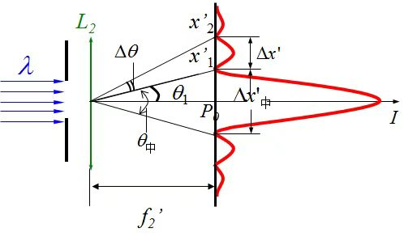
实验数据处理方法
一、单缝条纹间距法
在透镜焦面上测相邻暗纹间距 \(\Delta y\)，小角近似下：
已知激光波长 \(\lambda\) 与透镜焦距 \(f\)，可得缝宽：
二、逐差法
测第 \(k\) 级与第 \(k+\Delta k\) 级暗纹位置 \(y_k\)、\(y_{k+\Delta k}\)，可减弱单次对准误差：
与最小二乘拟合 \(y_k\)–\(k\) 直线求斜率 \(\lambda f/a\) 等价，可任选其一。
三、圆孔艾里斑法
测第一暗环直径 \(d_1\)，则：
已知 \(\lambda\)、\(f\) 可求孔径直径 \(D\)；已知 \(D\) 可检验波长或系统常数。
四、实验步骤
五、误差分析
系统误差
- 光束未充分准直（非平面波入射）
- 透镜焦距标称值与实际值偏差
- 波长与标称值不符（多纵模或谱线展宽）
- 缝边/孔径加工缺陷或边缘衍射附加相移
随机误差
- 暗纹或艾里斑边缘判读不一致
- 屏面与焦面未重合导致的离焦
- 支架振动与空气扰动
- 标尺与像面比例标定误差
六、提高测量精度的方法
暗纹位置多次测量取平均
用多级暗纹逐差或拟合求斜率
选用较长焦距透镜放大线度便于读数
保持光阑与透镜清洁、共轴
实验注意事项
数据拟合优化
多级暗纹拟合：测量多组 \((k, y_k)\)，用最小二乘拟合直线 \(y_k = (\lambda f/a)\,k + b\)，可同时得到斜率与零点修正。
逐差或拟合可削弱单次对准误差；外级次条纹线度较大时相对不确定度常更小。
拟合时可对信噪比更高的暗纹赋予更大权重，或剔除明显离群的测量点后再回归。